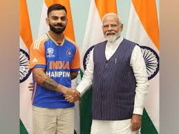
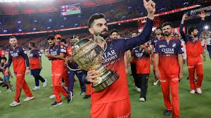
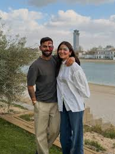

Photos




November 5, 1988
Virat Kohli (born 5 November 1988) is an Indian international cricketer and the former all-format captain of the Indian national cricket team. He is a right-handed batter and occasional right-arm medium pace bowler. Considered one of the greatest all-format batsmen in the history of cricket, he has been nicknamed the King, the Chase Master, and the Run Machine for his skills, records and ability to lead his team to victory. Kohli has the most centuries in ODIs and the second-most centuries in international cricket with 85 tons across all formats. He is also the leading run-scorer in the Indian Premier League. Kohli is the most successful Test captain of India with most wins and 3 consecutive Test mace retainments. He is the only batter to earn 900+ rating points across all 3 formats
Kohli has the most centuries in ODIs and the second-most centuries in international cricket with 85 tons across all formats. He is also the leading run-scorer in the Indian Premier League. Kohli is the most successful Test captain of India with most wins and 3 consecutive Test mace retainments. He is the only batter to earn 900+ rating points across all 3 formats
Virat Kohli has rendered significant service through his illustrious 15+ year cricket career for India and RCB, alongside extensive philanthropy via the Virat Kohli Foundation. His service includes supporting underprivileged children, animal welfare, and launching ambulance services for stray animals. He also invests in wellness, fashion, and technology businesses.
Virat Kohli, born on 5 November 1988 in Delhi, is a prominent Indian cricketer. His father, Prem Kohli, was a criminal lawyer, and his mother, Saroj Kohli, is a homemaker. Kohli showed a keen interest in cricket at the age of three and joined the West Delhi Cricket Academy at nine.
He is a right-hand batsman, right-arm medium pacer, and an outstanding fielder. Making his Test debut in 2011, he became the captain of the Indian team in 2014. Kohli has scored over 5000 runs in Test matches and more than 8000 runs in One Day Internationals. He received the Arjuna Award in 2013.



"He is an inspiration to all young cricketer."
Author of Tribute Site: email address